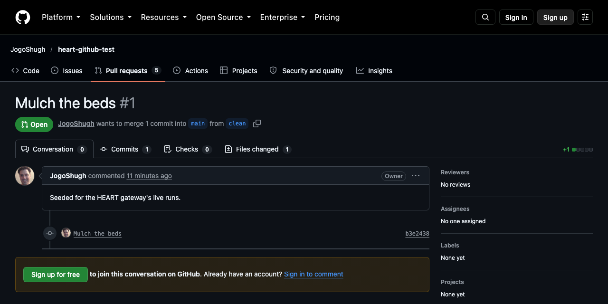
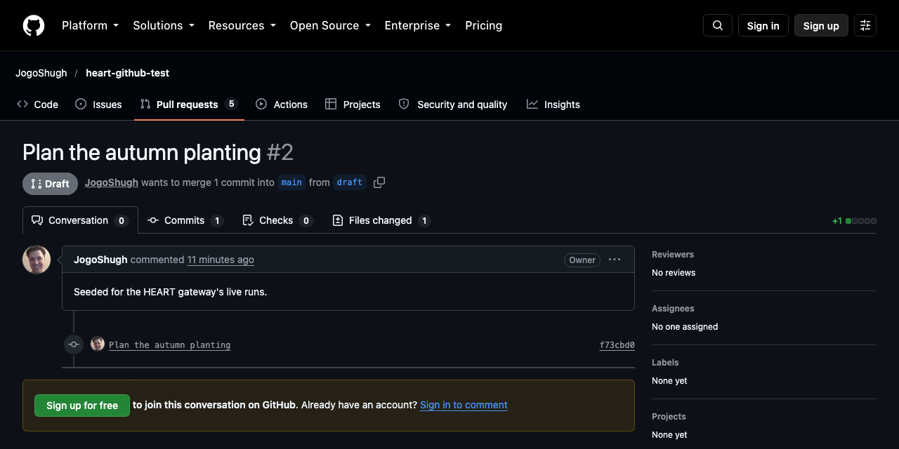
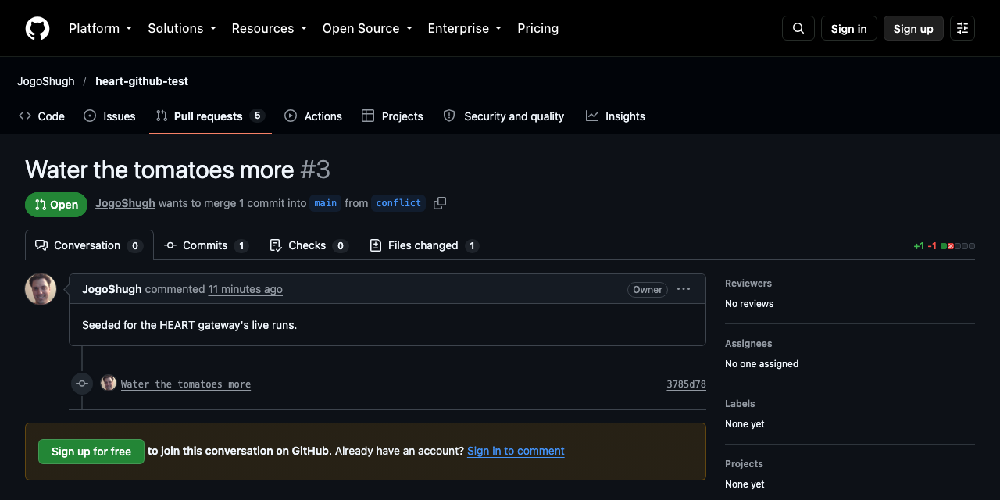
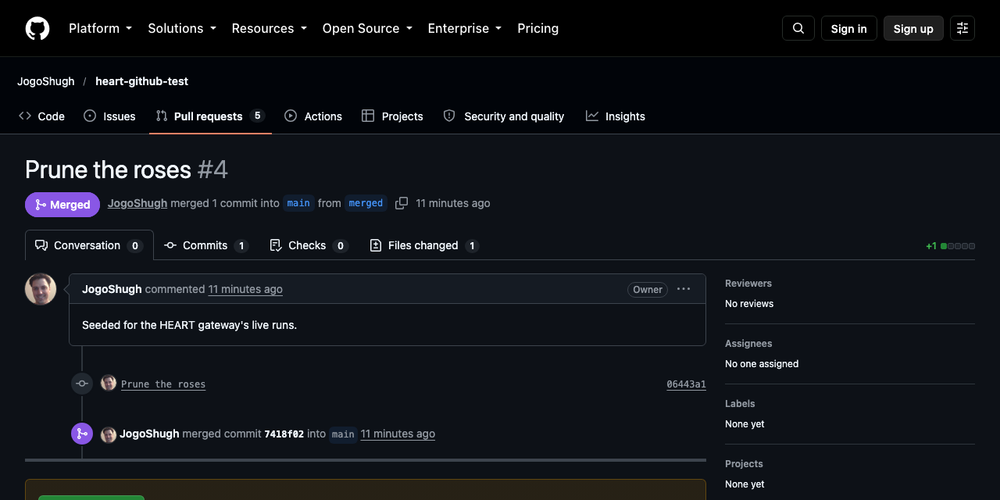
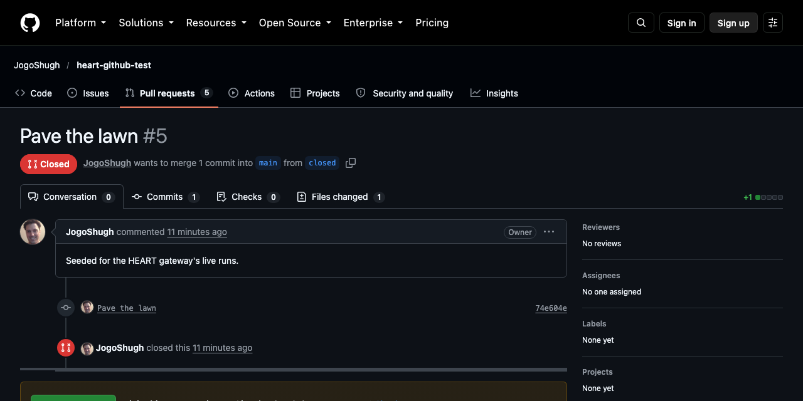
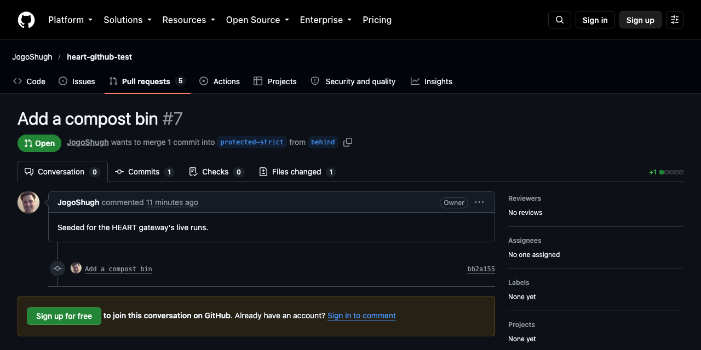

Take HEART · Part 2, live · 2026-10-16
GitHub Pulls, Two Ways
Seven real pull requests on GitHub, each read twice with the same token: straight from GitHub's REST API, and through the HEART gateway, which knows GitHub only by its own OpenAPI description and one connector folder.
GitHub tells a client what a pull request is. HEART also tells it what it may do now, how, and why not the rest.
The repository JogoShugh/heart-github-test was seeded by heart-gateway/live/github/seed.py with a pull request in each state it can be in. Every exchange below is real and unedited but for the token, written <token>, and for the pull request's other data, the same on both sides, which is counted rather than shown. The reads are all GETs; the acts, last, changed the pull requests they name, on that repository only.
| # | Pull request | GitHub says | HEART offers |
|---|---|---|---|
| #1 | Mulch the beds | open, clean | close, merge |
| #2 | Plan the autumn planting | open, clean | close |
| #3 | Water the tomatoes more | open, dirty | close |
| #4 | Prune the roses | closed, unknown | nothing |
| #5 | Pave the lawn | closed, unknown | reopen |
| #6 | Build a greenhouse | open, blocked | close |
| #7 | Add a compost bin | open, clean | close, merge |
How to read each pair
- Left, GitHub. Forty-odd fields of data, and
_linksto more data: the HTML page, comments, commits, statuses. Every link is something to read. Nothing in the answer is something to do. - Right, HEART. The same data, and, highlighted, what HEART adds: a form for each act allowed now (its method, its target, the JSON Schema of its body, taken from GitHub's own description) and an
hr:unavailablelink to why the other acts are not. - Above, GitHub's own page. Signed out, its HTML shows no merge box at all: GitHub's web page already leaves out controls its viewer can't use. Its API never says either way.
Pull request #1 · clean
Mulch the beds
HEART offers close, merge. No reopen: The pull request is already open.

GitHub's answer has state, and links to read more; nothing says what may be done now. HEART's is the same data, with a form for each act allowed now and a link to why the rest are absent: open the box to see exactly what it adds.
GitHub's answer, and what HEART's adds
GitHub GET https://api.github.com/repos/JogoShugh/heart-github-test/pulls/1
HEART GET http://localhost:8392/repos/JogoShugh/heart-github-test/pulls/1 Accept: application/hal+json
Why the rest are absent
Full exchanges, unabridged: captures/pull-1.json.
Pull request #2 · a draft
Plan the autumn planting
HEART offers close. No reopen: The pull request is already open. No merge: A draft can't be merged; mark it ready for review first.

GitHub's answer has state, and links to read more; nothing says what may be done now. HEART's is the same data, with a form for each act allowed now and a link to why the rest are absent: open the box to see exactly what it adds.
GitHub's answer, and what HEART's adds
GitHub GET https://api.github.com/repos/JogoShugh/heart-github-test/pulls/2
HEART GET http://localhost:8392/repos/JogoShugh/heart-github-test/pulls/2 Accept: application/hal+json
Why the rest are absent
Full exchanges, unabridged: captures/pull-2.json.
Pull request #3 · in conflict
Water the tomatoes more
HEART offers close. No reopen: The pull request is already open. No merge: The branch has conflicts with its base; resolve them first.

GitHub's answer has state, and links to read more; nothing says what may be done now. HEART's is the same data, with a form for each act allowed now and a link to why the rest are absent: open the box to see exactly what it adds.
GitHub's answer, and what HEART's adds
GitHub GET https://api.github.com/repos/JogoShugh/heart-github-test/pulls/3
HEART GET http://localhost:8392/repos/JogoShugh/heart-github-test/pulls/3 Accept: application/hal+json
Why the rest are absent
Full exchanges, unabridged: captures/pull-3.json.
Pull request #4 · merged
Prune the roses
HEART offers nothing. No close: The pull request is already closed. No reopen: A merged pull request can't be reopened. No merge: A closed pull request can't be merged; reopen it first.

GitHub's answer has state, and links to read more; nothing says what may be done now. HEART's is the same data, with a form for each act allowed now and a link to why the rest are absent: open the box to see exactly what it adds.
GitHub's answer, and what HEART's adds
GitHub GET https://api.github.com/repos/JogoShugh/heart-github-test/pulls/4
HEART GET http://localhost:8392/repos/JogoShugh/heart-github-test/pulls/4 Accept: application/hal+json
Why the rest are absent
Full exchanges, unabridged: captures/pull-4.json.
Pull request #5 · closed
Pave the lawn
HEART offers reopen. No close: The pull request is already closed. No merge: A closed pull request can't be merged; reopen it first.

GitHub's answer has state, and links to read more; nothing says what may be done now. HEART's is the same data, with a form for each act allowed now and a link to why the rest are absent: open the box to see exactly what it adds.
GitHub's answer, and what HEART's adds
GitHub GET https://api.github.com/repos/JogoShugh/heart-github-test/pulls/5
HEART GET http://localhost:8392/repos/JogoShugh/heart-github-test/pulls/5 Accept: application/hal+json
Why the rest are absent
Full exchanges, unabridged: captures/pull-5.json.
Pull request #6 · blocked by a required review
Build a greenhouse
HEART offers close. No reopen: The pull request is already open. No merge: Branch protection blocks the merge: a required check or review is missing.
GitHub's answer has state, and links to read more; nothing says what may be done now. HEART's is the same data, with a form for each act allowed now and a link to why the rest are absent: open the box to see exactly what it adds.
GitHub's answer, and what HEART's adds
GitHub GET https://api.github.com/repos/JogoShugh/heart-github-test/pulls/6
HEART GET http://localhost:8392/repos/JogoShugh/heart-github-test/pulls/6 Accept: application/hal+json
Why the rest are absent
Full exchanges, unabridged: captures/pull-6.json.
Pull request #7 · meant to be behind its base; GitHub says clean
Add a compost bin
HEART offers close, merge. No reopen: The pull request is already open.

GitHub's answer has state, and links to read more; nothing says what may be done now. HEART's is the same data, with a form for each act allowed now and a link to why the rest are absent: open the box to see exactly what it adds.
GitHub's answer, and what HEART's adds
GitHub GET https://api.github.com/repos/JogoShugh/heart-github-test/pulls/7
HEART GET http://localhost:8392/repos/JogoShugh/heart-github-test/pulls/7 Accept: application/hal+json
Why the rest are absent
Full exchanges, unabridged: captures/pull-7.json.
Acting through the forms
Phase 10, on the same repository: each act is the form HEART offered, sent as any HEART client sends it, with the ETag of the read it came from. On the left, what a client of GitHub's API would have had to build itself. Captured in captures/acts.json.
GitHub has no close operation: a client must know that closing is a PATCH of state. HEART offered close as a form; after it, reopen and edit are offered.
200 Close #1
GitHub's API PATCH https://api.github.com/repos/JogoShugh/heart-github-test/pulls/1 Authorization: Bearer <token> {"state": "closed"}
HEART POST http://localhost:8392/repos/JogoShugh/heart-github-test/pulls/1/actions/close If-Match: "seq-0.hsf.L0.25a7728c95f3bf91" {}
answer HTTP 200 Content-Location: /repos/JogoShugh/heart-github-test/pulls/1 ETag: "seq-0.hsf.L0.18aded5849f51c61"
Reopened, the pull request offers close, but not merge yet: GitHub is working out mergeability again (mergeable: null), and the connector's rule says to read it again shortly.
200 Reopen #1
GitHub's API PATCH https://api.github.com/repos/JogoShugh/heart-github-test/pulls/1 Authorization: Bearer <token> {"state": "open"}
HEART POST http://localhost:8392/repos/JogoShugh/heart-github-test/pulls/1/actions/reopen If-Match: "seq-0.hsf.L0.803ba698d7884e70" {}
answer HTTP 200 Content-Location: /repos/JogoShugh/heart-github-test/pulls/1 ETag: "seq-0.hsf.L0.3ebd7972209564ba"
The gateway fills merge's sha from the head the client's view had, so GitHub merges only that head. After it, #7 offers only edit, and says why reopen is absent.
200 Merge #7
GitHub's API PUT https://api.github.com/repos/JogoShugh/heart-github-test/pulls/7/merge Authorization: Bearer <token> {"merge_method": "squash", "sha": "bb2a1551d11a9acfc66168f994a3f8483c1b1220"}
HEART POST http://localhost:8392/repos/JogoShugh/heart-github-test/pulls/7/actions/merge If-Match: "seq-0.hsf.L0.0cc2e9d9c98bae16" {"merge_method": "squash"}
answer HTTP 200 Content-Location: /repos/JogoShugh/heart-github-test/pulls/7 ETag: "seq-0.hsf.L0.630ba37cacee41a7"
Another client pushed to the branch after this one read #1. The read still matched (GitHub moved the head a moment later), so the gateway's own read just before the act caught it: 412, and GitHub was never asked to merge.
412 Merge #1 after another push (GitHub answered the push 200)
GitHub's API PUT https://api.github.com/repos/JogoShugh/heart-github-test/pulls/1/merge Authorization: Bearer <token> {"merge_method": "squash", "sha": "b3e24388176cc1e7d328863ec8b4c7df19a6b685"}
HEART POST http://localhost:8392/repos/JogoShugh/heart-github-test/pulls/1/actions/merge If-Match: "seq-0.hsf.L0.41d8d90e1d6d70f2" {"merge_method": "squash"}
answer HTTP 412
Merge was never offered on #6. A client that sends it anyway is refused 409 with the reason, and GitHub is never asked.
409 Merge #6, which isn't offered
GitHub's API PUT https://api.github.com/repos/JogoShugh/heart-github-test/pulls/6/merge Authorization: Bearer <token> {"merge_method": "squash"}
HEART POST http://localhost:8392/repos/JogoShugh/heart-github-test/pulls/6/actions/merge If-Match: "seq-0.hsf.L0.6713db65ebaffdff" {"merge_method": "squash"}
answer HTTP 409
Editing, review requests and branch updates
Three more acts, each declared in the connector's resource file and nothing else, sent on the same repository the same way. Captured in captures/acts-more.json.
The first time, both branch updates were refused 412. Right after the push to main, GitHub was still working out #1's mergeability: the client read mergeable: null, and by the time it acted GitHub had filled it in, so the pull request had changed and the client's ETag no longer matched. That is the validator doing its job: the client acted on a view that was no longer current. The run below reads again until GitHub has settled, as the connector's own reason tells a client to (the first run, 2 refusals).
Edit is the same GitHub operation as close, with the client's title and body instead of a fixed state. The form asks for those two fields and nothing else.
200 Edit #1's title and body
GitHub's API PATCH https://api.github.com/repos/JogoShugh/heart-github-test/pulls/1 Authorization: Bearer <token> {"title": "Mulch the beds, all of them", "body": "Edited through the HEART gateway's form."}
HEART POST http://localhost:8392/repos/JogoShugh/heart-github-test/pulls/1/actions/edit If-Match: "seq-0.hsf.L0.4ed1239132f48e49" {"title": "Mulch the beds, all of them", "body": "Edited through the HEART gateway's form."}
answer HTTP 200 Content-Location: /repos/JogoShugh/heart-github-test/pulls/1 ETag: "seq-0.hsf.L0.4ed1239132f48e49"
GitHub's own schema says a review request names reviewers or teams, at least one. The form keeps that rule, so the gateway refuses the empty request itself, and GitHub is never asked.
422 Request a review from nobody
GitHub's API POST https://api.github.com/repos/JogoShugh/heart-github-test/pulls/1/requested_reviewers Authorization: Bearer <token> {}
HEART POST http://localhost:8392/repos/JogoShugh/heart-github-test/pulls/1/actions/request-review If-Match: "seq-0.hsf.L0.4ed1239132f48e49" {}
answer HTTP 422
GitHub refuses a reviewer who isn't a collaborator. Its 422 names no field, so the gateway passes on GitHub's own sentence as the violation.
422 Request a review from someone who isn't a collaborator
GitHub's API POST https://api.github.com/repos/JogoShugh/heart-github-test/pulls/1/requested_reviewers Authorization: Bearer <token> {"reviewers": ["octocat"]}
HEART POST http://localhost:8392/repos/JogoShugh/heart-github-test/pulls/1/actions/request-review If-Match: "seq-0.hsf.L0.4ed1239132f48e49" {"reviewers": ["octocat"]}
answer HTTP 422
A push to main put #1's branch behind. The gateway fills expected_head_sha from the head the client saw, so GitHub updates only that head.
200 Update #1's branch after a push to main (GitHub answered the push 200)
GitHub's API PUT https://api.github.com/repos/JogoShugh/heart-github-test/pulls/1/update-branch Authorization: Bearer <token> {"expected_head_sha": "498278d46e6445801a87b29b4b499963fc9827ee"}
HEART POST http://localhost:8392/repos/JogoShugh/heart-github-test/pulls/1/actions/update-branch If-Match: "seq-0.hsf.L0.fb85941774e07a50" {}
answer HTTP 200 Content-Location: /repos/JogoShugh/heart-github-test/pulls/1 ETag: "seq-0.hsf.L0.0662bc33c9c4eda8"
Already up to date, GitHub refuses with 422. The connector says that status means not now, so the client gets 409 with GitHub's words.
409 Update #1's branch again
GitHub's API PUT https://api.github.com/repos/JogoShugh/heart-github-test/pulls/1/update-branch Authorization: Bearer <token> {"expected_head_sha": "676048567ec4b9b68706f23d72e9dfb63545c765"}
HEART POST http://localhost:8392/repos/JogoShugh/heart-github-test/pulls/1/actions/update-branch If-Match: "seq-0.hsf.L0.7901f92118014fd8" {}
answer HTTP 409
Issues · the same repository · 2026-10-17
Issues, the same way
The same gateway, one more resource file and reader for issues, one for the repository, one for comments. An open issue, #10, read twice:
GitHub's answer, and what HEART's adds
GitHub GET https://api.github.com/repos/JogoShugh/heart-github-test/issues/10
HEART GET http://localhost:8392/repos/JogoShugh/heart-github-test/issues/10 Accept: application/hal+json
Why the rest are absent
Besides the forms, HEART adds github:issues-list-comments and github:issues-list-sub-issues, the lists under the issue, linked from it. Full exchanges: issue-open.json, and the repository, a locked issue, three closed ones, a comment and both lists beside it.
Every issue act, through the forms
New things come from forms a resource offers: the repository's open-issue, the issue's comment, each answered 201 with Location. Then each of the issue's acts, sent with the ETag of the read it came from, after the client has read until GitHub settled. Captured by live/github/issues.py in issues-acts.json.
GitHub's API has a create operation a client must know to POST. HEART reads the repository at GitHub's own path and offers open-issue as a form; the answer is 201, and Location names the new issue, which the client follows.
201 Open an issue from the repository
GitHub's API POST https://api.github.com/repos/JogoShugh/heart-github-test/issues Authorization: Bearer <token> {"title": "Weed the paths", "body": "Opened through the HEART gateway's form."}
HEART POST http://localhost:8392/repos/JogoShugh/heart-github-test/actions/open-issue If-Match: "seq-0.hsf.L0.ce9a37ec19adba10" {"title": "Weed the paths", "body": "Opened through the HEART gateway's form."}
answer HTTP 201 Content-Location: /repos/JogoShugh/heart-github-test Location: /repos/JogoShugh/heart-github-test/issues/16 ETag: "seq-0.hsf.L0.8cba0c78a5ce25bf"
201 Open a second issue
GitHub's API POST https://api.github.com/repos/JogoShugh/heart-github-test/issues Authorization: Bearer <token> {"title": "Weed the gravel path", "body": "A sub-issue, opened through the same form."}
HEART POST http://localhost:8392/repos/JogoShugh/heart-github-test/actions/open-issue If-Match: "seq-0.hsf.L0.8cba0c78a5ce25bf" {"title": "Weed the gravel path", "body": "A sub-issue, opened through the same form."}
answer HTTP 201 Content-Location: /repos/JogoShugh/heart-github-test Location: /repos/JogoShugh/heart-github-test/issues/17 ETag: "seq-0.hsf.L0.16191e28346fc18c"
Commenting is an act the issue offers. GitHub's answer is the new comment; the gateway answers 201 with its address, at GitHub's own path for a comment.
201 Comment on the issue
GitHub's API POST https://api.github.com/repos/JogoShugh/heart-github-test/issues/16/comments Authorization: Bearer <token> {"body": "Commented through the HEART gateway's form."}
HEART POST http://localhost:8392/repos/JogoShugh/heart-github-test/issues/16/actions/comment If-Match: "seq-0.hsf.L0.47e3936198203deb" {"body": "Commented through the HEART gateway's form."}
answer HTTP 201 Content-Location: /repos/JogoShugh/heart-github-test/issues/16 Location: /repos/JogoShugh/heart-github-test/issues/comments/6236581768 ETag: "seq-0.hsf.L0.587d742f0f15752c"
A comment is a resource too: its author, or anyone with push access, is offered edit.
200 Edit the comment
GitHub's API PATCH https://api.github.com/repos/JogoShugh/heart-github-test/issues/comments/6236581768 Authorization: Bearer <token> {"body": "Commented, then edited, through the HEART gateway's forms."}
HEART POST http://localhost:8392/repos/JogoShugh/heart-github-test/issues/comments/6236581768/actions/edit If-Match: "seq-0.hsf.L0.420ab33e2c3aac76" {"body": "Commented, then edited, through the HEART gateway's forms."}
answer HTTP 200 Content-Location: /repos/JogoShugh/heart-github-test/issues/comments/6236581768 ETag: "seq-0.hsf.L0.da04354d54ad0b16"
Edit is GitHub's issues/update with only the client's title and body. Shared by name with pull requests: one relation, either resource.
200 Edit the issue's title
GitHub's API PATCH https://api.github.com/repos/JogoShugh/heart-github-test/issues/16 Authorization: Bearer <token> {"title": "Weed the paths, all of them"}
HEART POST http://localhost:8392/repos/JogoShugh/heart-github-test/issues/16/actions/edit If-Match: "seq-0.hsf.L0.9c94da0c256bcede" {"title": "Weed the paths, all of them"}
answer HTTP 200 Content-Location: /repos/JogoShugh/heart-github-test/issues/16 ETag: "seq-0.hsf.L0.4ec61d0eb2d9fb79"
GitHub's add-labels body is oneOf several shapes; the form keeps the object one, the labels array.
200 Label it
GitHub's API POST https://api.github.com/repos/JogoShugh/heart-github-test/issues/16/labels Authorization: Bearer <token> {"labels": ["chore"]}
HEART POST http://localhost:8392/repos/JogoShugh/heart-github-test/issues/16/actions/label If-Match: "seq-0.hsf.L0.4ec61d0eb2d9fb79" {"labels": ["chore"]}
answer HTTP 200 Content-Location: /repos/JogoShugh/heart-github-test/issues/16 ETag: "seq-0.hsf.L0.ddf61c2453c65d34"
GitHub names the label in its path, /labels/{name}. The form asks for name; the gateway puts it in the path, encoded, and sends no body.
200 Take the label off
GitHub's API DELETE https://api.github.com/repos/JogoShugh/heart-github-test/issues/16/labels/chore Authorization: Bearer <token>
HEART POST http://localhost:8392/repos/JogoShugh/heart-github-test/issues/16/actions/unlabel If-Match: "seq-0.hsf.L0.ddf61c2453c65d34" {"name": "chore"}
answer HTTP 200 Content-Location: /repos/JogoShugh/heart-github-test/issues/16 ETag: "seq-0.hsf.L0.60761ceab9b763d9"
issues/add-assignees, with the client's assignees.
200 Assign the owner
GitHub's API POST https://api.github.com/repos/JogoShugh/heart-github-test/issues/16/assignees Authorization: Bearer <token> {"assignees": ["JogoShugh"]}
HEART POST http://localhost:8392/repos/JogoShugh/heart-github-test/issues/16/actions/assign If-Match: "seq-0.hsf.L0.60761ceab9b763d9" {"assignees": ["JogoShugh"]}
answer HTTP 200 Content-Location: /repos/JogoShugh/heart-github-test/issues/16 ETag: "seq-0.hsf.L0.1d08eca73214a3c7"
issues/remove-assignees: a DELETE with a body, as GitHub's description says.
200 Unassign the owner
GitHub's API DELETE https://api.github.com/repos/JogoShugh/heart-github-test/issues/16/assignees Authorization: Bearer <token> {"assignees": ["JogoShugh"]}
HEART POST http://localhost:8392/repos/JogoShugh/heart-github-test/issues/16/actions/unassign If-Match: "seq-0.hsf.L0.1d08eca73214a3c7" {"assignees": ["JogoShugh"]}
answer HTTP 200 Content-Location: /repos/JogoShugh/heart-github-test/issues/16 ETag: "seq-0.hsf.L0.c0f4ff59b44057b5"
issues/lock, with the client's lock_reason. Locked, the issue offers unlock, not lock.
200 Lock the conversation
GitHub's API PUT https://api.github.com/repos/JogoShugh/heart-github-test/issues/16/lock Authorization: Bearer <token> {"lock_reason": "off-topic"}
HEART POST http://localhost:8392/repos/JogoShugh/heart-github-test/issues/16/actions/lock If-Match: "seq-0.hsf.L0.c0f4ff59b44057b5" {"lock_reason": "off-topic"}
answer HTTP 200 Content-Location: /repos/JogoShugh/heart-github-test/issues/16 ETag: "seq-0.hsf.L0.a7e108cf8fcca79a"
Lock was not offered on a locked issue. Sent anyway, it is refused 409 with the reason, and GitHub is never asked.
409 Lock it again, which isn't offered
GitHub's API PUT https://api.github.com/repos/JogoShugh/heart-github-test/issues/16/lock Authorization: Bearer <token> {}
HEART POST http://localhost:8392/repos/JogoShugh/heart-github-test/issues/16/actions/lock If-Match: "seq-0.hsf.L0.a7e108cf8fcca79a" {}
answer HTTP 409
issues/unlock: a DELETE with nothing to say sends no body.
200 Unlock the conversation
GitHub's API DELETE https://api.github.com/repos/JogoShugh/heart-github-test/issues/16/lock Authorization: Bearer <token>
HEART POST http://localhost:8392/repos/JogoShugh/heart-github-test/issues/16/actions/unlock If-Match: "seq-0.hsf.L0.a7e108cf8fcca79a" {}
answer HTTP 200 Content-Location: /repos/JogoShugh/heart-github-test/issues/16 ETag: "seq-0.hsf.L0.0fe1383c70e0c3e6"
GitHub names a sub-issue by its id, not its number. The form says so in its description.
200 Add the second issue as a sub-issue
GitHub's API POST https://api.github.com/repos/JogoShugh/heart-github-test/issues/16/sub_issues Authorization: Bearer <token> {"sub_issue_id": 5900536427}
HEART POST http://localhost:8392/repos/JogoShugh/heart-github-test/issues/16/actions/add-sub-issue If-Match: "seq-0.hsf.L0.0fe1383c70e0c3e6" {"sub_issue_id": 5900536427}
answer HTTP 200 Content-Location: /repos/JogoShugh/heart-github-test/issues/16 ETag: "seq-0.hsf.L0.3c44b0f65f3bdce3"
issues/remove-sub-issue: a DELETE of /sub_issue with the id in its body.
200 Remove the sub-issue
GitHub's API DELETE https://api.github.com/repos/JogoShugh/heart-github-test/issues/16/sub_issue Authorization: Bearer <token> {"sub_issue_id": 5900536427}
HEART POST http://localhost:8392/repos/JogoShugh/heart-github-test/issues/16/actions/remove-sub-issue If-Match: "seq-0.hsf.L0.3c44b0f65f3bdce3" {"sub_issue_id": 5900536427}
answer HTTP 200 Content-Location: /repos/JogoShugh/heart-github-test/issues/16 ETag: "seq-0.hsf.L0.3c44b0f65f3bdce3"
Someone changed the issue straight on GitHub after this client read it. GitHub's issue writes take no version, so the gateway's read just before acting is the guard: 412, and GitHub was never asked to close it.
412 Close it after another change on GitHub (GitHub answered the change 200)
GitHub's API PATCH https://api.github.com/repos/JogoShugh/heart-github-test/issues/16 Authorization: Bearer <token> {"state": "closed", "state_reason": "completed"}
HEART POST http://localhost:8392/repos/JogoShugh/heart-github-test/issues/16/actions/close If-Match: "seq-0.hsf.L0.0fe1383c70e0c3e6" {}
answer HTTP 412
One of three ways to close, each GitHub's issues/update with its own fixed state_reason.
200 Close the second issue as not planned
GitHub's API PATCH https://api.github.com/repos/JogoShugh/heart-github-test/issues/17 Authorization: Bearer <token> {"state": "closed", "state_reason": "not_planned"}
HEART POST http://localhost:8392/repos/JogoShugh/heart-github-test/issues/17/actions/close-not-planned If-Match: "seq-0.hsf.L0.68518b67ca567dd9" {}
answer HTTP 200 Content-Location: /repos/JogoShugh/heart-github-test/issues/17 ETag: "seq-0.hsf.L0.c93ef73f60f45096"
close is shared with pull requests; on an issue its body is state closed, state_reason completed.
200 Close the issue as completed
GitHub's API PATCH https://api.github.com/repos/JogoShugh/heart-github-test/issues/16 Authorization: Bearer <token> {"state": "closed", "state_reason": "completed"}
HEART POST http://localhost:8392/repos/JogoShugh/heart-github-test/issues/16/actions/close If-Match: "seq-0.hsf.L0.e8317f2101cbdc82" {}
answer HTTP 200 Content-Location: /repos/JogoShugh/heart-github-test/issues/16 ETag: "seq-0.hsf.L0.6e7d6747fa6a2921"
Reopened with state_reason reopened, as GitHub's own page does it.
200 Reopen it
GitHub's API PATCH https://api.github.com/repos/JogoShugh/heart-github-test/issues/16 Authorization: Bearer <token> {"state": "open", "state_reason": "reopened"}
HEART POST http://localhost:8392/repos/JogoShugh/heart-github-test/issues/16/actions/reopen If-Match: "seq-0.hsf.L0.6e7d6747fa6a2921" {}
answer HTTP 200 Content-Location: /repos/JogoShugh/heart-github-test/issues/16 ETag: "seq-0.hsf.L0.a94f326e93e83838"
close-duplicate takes duplicate_issue_id from the client, beside its fixed state and reason.
200 Close it as a duplicate of the second
GitHub's API PATCH https://api.github.com/repos/JogoShugh/heart-github-test/issues/16 Authorization: Bearer <token> {"state": "closed", "state_reason": "duplicate", "duplicate_issue_id": 5900536427}
HEART POST http://localhost:8392/repos/JogoShugh/heart-github-test/issues/16/actions/close-duplicate If-Match: "seq-0.hsf.L0.a94f326e93e83838" {"duplicate_issue_id": 5900536427}
answer HTTP 200 Content-Location: /repos/JogoShugh/heart-github-test/issues/16 ETag: "seq-0.hsf.L0.227d34d7677ddef5"
Optimization: affordance sets and schemas, shared and cached
Every answer above is HEART's first rung, L0: the state, its forms and their full schemas in one response, revalidated on every read. A client that asks for more with Prefer gets the same state with its forms moved out: at L1 to an affordance set, at L2 with each form's schema moved out again. Each is named by the hash of its own bytes, so it never changes, is cached for a year, and is checked against the integrity its link carries. Pull requests in the same state, with the same reasons, link the same set.
L1: the same read of #1, its forms moved out to a shared set
HEART GET http://localhost:8392/repos/JogoShugh/heart-github-test/pulls/1 Prefer: forms=link
L2: the set's schemas by link too
HEART GET http://localhost:8392/affordance-sets/9140788d0ec03fbc
Each schema, fetched once, by its address
HEART GET http://localhost:8392/schemas/91c3b4ed90232223
Which pull requests share a set, and what each read weighs
| # | Offers | Affordance set | L0 bytes | L1 bytes | Set bytes, once |
|---|---|---|---|---|---|
| #1 | close, merge | 83306250e2288779 | 16,921 | 15,756 | 1,720 |
| #2 | close | 2fbeb5421021ac46 | 16,206 | 15,765 | 874 |
| #3 | close | 3a002fe7e1fe517c | 16,176 | 15,735 | 874 |
| #4 | nothing | 65b35b6d988b0b34 | 16,757 | 16,737 | 331 |
| #5 | reopen | e5bf8672d7c639ef | 16,179 | 15,741 | 871 |
| #6 | close | 0e1d97a472e1651e | 16,231 | 15,790 | 874 |
| #7 | close, merge | 83306250e2288779 | 16,950 | 15,785 | 1,720 |
#1 and #7 are both open and clean, so they link one set: a client reading both fetches it once. #2, #3 and #6 all offer only close, but each leaves merge out for its own reason (a draft, a conflict, a review), and the reasons are part of what a set says, so each has its own. Across a real repository's pull requests, states and reasons repeat, and so do the sets.
What it saves here is small: about a kilobyte per read, since GitHub's own data, some fifteen kilobytes of it, is most of every answer. The sets pay off where forms and schemas are large beside the state, and where a client reads many resources in few states: it carries the controls once, and every read after is the state and a link.
Where the reasons come from
GitHub's API carries the facts, draft, merged, mergeable, mergeable_state, and the caller's permissions on the repository, but no decisions. The gateway's GitHub connector, YAML files in heart-gateway/connectors/github, writes those decisions down once, in order, with their reasons, and GitHub's own refusals stay the final word. Every client then reads them as forms and reasons instead of each one hard-coding GitHub's rules.